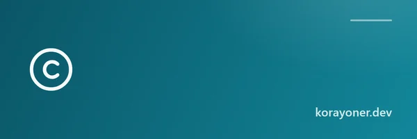
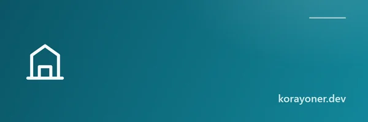
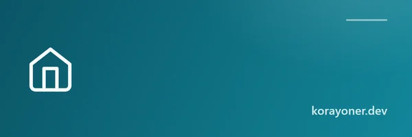
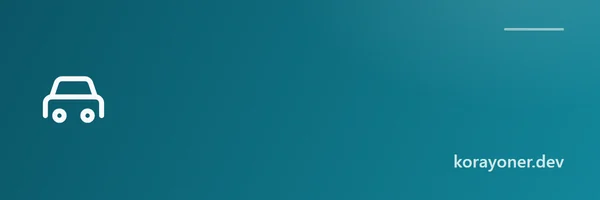
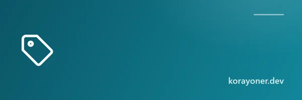
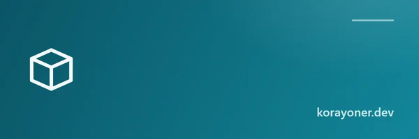

Yazılım Geliştirici · Açık Kaynak
Merhaba, ben Koray Öner.
Modern web teknolojileriyle hızlı, erişilebilir ve kullanıcı dostu uygulamalar geliştiriyorum. Bütün araçlarım tamamen ücretsizdir, üyelik gerektirmez ve hesaplamalar tarayıcınızda yapılır — verileriniz cihazınızdan çıkmaz.
- Ücretsiz
- Üyeliksiz
- Reklamsız
- Açık kaynak
Hakkımda
Yazılım geliştirmeyi, sürekli öğrenmeyi ve insanların günlük hayatta işini kolaylaştıran dijital çözümler üretmeyi seviyorum. Özellikle modern web teknolojileri kullanarak hızlı, erişilebilir ve kullanıcı dostu uygulamalar geliştirmeye odaklanıyorum.
Profesyonel kurumsal araçların geliştirilmesinde Türkiye'de ve yurt dışında birçok projede yer aldım; şu anda serbest (freelance) olarak proje geliştiriyorum.
Projelerimde ağırlıklı olarak HTML, CSS ve JavaScript kullanıyor; performans, sade tasarım ve temiz kod prensiplerini ön planda tutuyorum. Amacım yalnızca çalışan uygulamalar geliştirmek değil, aynı zamanda uzun yıllar sürdürülebilecek, kolay anlaşılır ve modern web standartlarına uygun projeler ortaya koymak.
İlgi alanlarım arasında frontend geliştirme, kullanıcı deneyimi (UX), teknik SEO, web performansı, erişilebilirlik (WCAG), açık kaynak yazılım ve modern arayüz tasarımı yer alıyor. Her projeyi gerçek kullanıcı ihtiyaçlarını göz önünde bulundurarak planlıyor, Google'ın güncel kalite standartlarını ve en iyi uygulamalarını takip ederek geliştiriyorum.
Bu platformda yayınladığım araçların önemli bir bölümü, Türkiye'deki güncel mevzuat parametreleriyle çalışan muhasebe, vergi ve finans hesaplayıcılarıdır: brüt-net maaş ve bordro dökümü, serbest meslek makbuzu (stopaj + KDV), MTV, araç ÖTV'si, gümrük vergisi, KDV, kredi, vadeli mevduat, kira artışı ve işsizlik maaşı gibi. Her araçta ilgili yılın resmî tarife ve oranları (vergi dilimleri, SGK tavanı, yeniden değerleme oranları) kaynaklardan doğrulanarak koda işlenir ve mevzuat değiştikçe güncellenir.
Teknik tarafta tüm araçlar saf HTML, CSS ve JavaScript ile, hiçbir çatıya veya sunucuya bağımlı olmadan geliştirilir. Hesaplamaların tamamı tarayıcınızda çalışır: girdiğiniz maaş, vergi veya kredi tutarları hiçbir sunucuya gönderilmez, kaydedilmez ve üçüncü taraflarla paylaşılmaz. Kod, GitHub üzerinde açık kaynak olarak herkesin incelemesine açıktır.
Bütün bu araçları ücretsiz, reklamsız ve üyeliksiz sunuyorum — ve öyle kalacaklar. Bir maaş hesabı ya da vergi sorgusu için kimsenin reklam izlemek, e-posta bırakmak veya ücret ödemek zorunda olmaması gerektiğine inanıyorum. Bu site, ticari bir ürün değil; günlük hayattaki hesap karmaşasını herkes için biraz olsun azaltma çabasıdır.
Yasal bilgilendirme
Bu sitedeki tüm hesaplama araçları yalnızca genel bilgilendirme ve yardım amacıyla hazırlanmıştır. Sonuçlar; mali müşavirlik, muhasebecilik, hukuki danışmanlık, yatırım danışmanlığı veya resmî bir kurum görüşü yerine geçmez ve kesinlik taşımaz. Vergi tarifeleri, oranlar ve mevzuat yıl içinde değişebilir; araçlardaki parametreler özenle güncellense de güncellik ve doğruluk garanti edilmez.
Bordro, vergi beyanı, tazminat, kredi veya gümrük işlemleri gibi resmî ve bağlayıcı kararlar almadan önce mutlaka Gelir İdaresi Başkanlığı, SGK, Ticaret Bakanlığı gibi yetkili kurumların resmî kaynaklarını ve mali müşavir, avukat gibi meslek profesyonellerini esas alın. Bu araçların kullanımından doğabilecek doğrudan veya dolaylı zararlardan site sahibi sorumlu tutulamaz; araçları kullanarak bu koşulları kabul etmiş sayılırsınız.
- Frontend Geliştirme
- Kullanıcı Deneyimi (UX)
- Teknik SEO
- Web Performansı
- Erişilebilirlik (WCAG)
- Açık Kaynak
- Vergi & Bordro Hesaplayıcıları
Projeler
Tüm araçlar ücretsizdir ve üyelik gerektirmez. Aradığınız aracı yazın ya da kategori seçin.
-

TCMB Döviz Kurları
Merkez Bankası'nın gösterge niteliğindeki günlük döviz kurları. Doğrudan TCMB bülteninden alınır, her iş günü otomatik güncellenir.
-
Brüt Net Maaş Hesaplama 2026
Vergi dilimleri, SGK tavanı, asgari ücret istisnası ve damga vergisiyle ay ay 12 aylık bordro dökümü. Netten brüte çevirir; 2020'ye kadar geçmiş bordro yıllarını da hesaplar.
-
Kıdem ve İhbar Tazminatı Hesaplama 2026
Güncel tavan, giydirilmiş brüt ücret, damga vergisi ve ihbar tazminatıyla gün gün hesaplayın; sonucu PDF olarak alın.
-
İşten Ayrılma Paketi Hesaplama 2026
Kıdem, ihbar, yıllık izin, son ay ücreti ve işsizlik maaşı tek hesapta. Fesih türüne göre hangi hakkın doğduğunu ve paranın hangi tarihte eline geçeceğini gösterir.
-
İşsizlik Maaşı Hesaplama 2026
Son 4 aylık brüt kazanç ve prim gün sayısına göre aylık işsizlik ödeneğini, tavanı ve kaç ay alacağınızı hesaplayın.
-
Serbest Meslek Makbuzu Hesaplama
Brütten nete veya netten brüte; %20 gelir vergisi stopajı, KDV ve KDV tevkifatı dahil, 2026 oranlarıyla.
-

Kredi Hesaplama 2026
İhtiyaç, konut ve taşıt kredisinde aylık taksiti, toplam geri ödemeyi ve ay ay anapara-faiz dağılımını anında görün.
-
Vadeli Mevduat Faizi Hesaplama 2026
Anapara, yıllık faiz oranı ve vadeye göre brüt faizi, stopaj kesintisini ve net getiriyi güncel oranlarla hesaplayın.
-

Kira Artışı Hesaplama 2026
Konut ve iş yeri kiralarında 12 aylık TÜFE ortalamasına göre yasal azami zam oranını, yeni kirayı ve artış farkını saniyede bulun.
-
Yüzde Hesaplama
Bir sayının yüzdesi, iki sayı arasındaki yüzde, yüzde artış ve azalış — formülleri ve örnekleriyle birlikte.
-
Birim Çevirici
Uzunluk, ağırlık, sıcaklık, alan, hacim, hız, veri ve zaman birimlerini anında dönüştürün: metre-inç, kg-libre, °C-°F, m²-dönüm.
-
Hesap Bölüşme (AA)
Restoran, kafe veya grup harcamasını kişi sayısına böler; bahşiş ekler ve kuruş farkını adil dağıtır.
-
DecorPalette — Renk Paleti Üreteci
İç mekân için erişilebilir renk paletleri üretin; WCAG kontrastını kontrol edin, tonları kilitleyin ve CSS/JSON olarak dışa aktarın.
-
Dither Studio — Dithering Görsel Aracı
Görsellerinizi 1-bit, 8-bit, 16-bit ve 32-bit dithering efektleriyle retro/piksel estetiğine dönüştürün. Floyd–Steinberg ve ordered dithering.
-
KDV Hesaplama
KDV hariç tutara KDV ekleyin ya da KDV dahil tutardan KDV’yi ayırın. %1, %10 ve %20 oranlarıyla matrah, KDV ve toplam anında.
-

MTV Hesaplama 2026
Motor hacmi, yaş ve taşıt değerine göre yıllık motorlu taşıtlar vergisi, Ocak/Temmuz taksitleri ve gelecek yıllar projeksiyonu. Otomobil ve motosiklet tarifeleri.
-

Araç ÖTV Hesaplama
Motor hacmi ve matraha göre ÖTV dilimi, KDV ve anahtar teslim fiyat; elektrikli ve hibrit dilimleri dahil. Fiyatın ne kadarı vergi, görsel analizle.
-

Gümrük Vergisi Hesaplama
30 € muafiyet kalktı: yurt dışı siparişlerde yeni oranlarla (AB %30, diğer %60, ÖTV IV +%20) vergi ve telefonlarda IMEI harcı dahil gerçek maliyet.
-
İnternet Hız Testi
İndirme (download) hızınızı ve ping değerinizi doğrudan tarayıcınızda, reklamsız olarak ölçün. Kayıt gerektirmez.
-
Final Notu Hesaplama
Vize notu ve ağırlıklara göre dersten geçmek için finalden kaç almanız gerektiğini ve dönem ortalamanızı anında hesaplayın.
-
Son Depremler
Türkiye ve çevresindeki son dakika depremleri büyüklük, derinlik, yer ve saat bilgisiyle canlı listeleyin. Kandilli verisiyle, reklamsız.
-
Yaş Hesaplama
Doğum tarihine göre kaç yaşında olduğunu yıl/ay/gün olarak, iki tarih arası gün sayısını ve doğum gününe kalan süreyi anında hesapla.
-
KeyMint — Şifre Üreteci
Kırılması zor, rastgele ve güvenli şifreler oluşturun. Güç ölçer, tek tıkla kopyalama; şifreniz tamamen tarayıcıda üretilir, hiçbir yere gönderilmez.
-
Yeni araçlar yolda
Şifre oluşturucular, hesaplayıcılar ve dönüştürücüler dahil yeni web araçları geliştirme aşamasında. Güncellemeler için GitHub profilimi takip edebilirsiniz.
Aramanızla eşleşen araç bulunamadı. Farklı bir anahtar kelime deneyin.
Makaleler
Araçların arkasındaki mevzuatı anlatan yazılar. Her yazıda dayanak kanun ve kurum bağlantısı verilir, mevzuat değiştikçe yazı güncellenir.
-
Torba yasada ne var, ne yok? Beklentiler ve gerçek durum
5 Eylül 2026 itibarıyla sunulmuş bir teklif yok. 2026'da çıkan kanunlar, Ekim takvimi ve dolaşan beklenti listesinin hukuki durumu ayrı ayrı.
-
Kademeli emeklilik son durum: yasalaştı mı, kimleri kapsıyor?
Kısa cevap: hayır, yasalaşmadı. Teklifin Meclis'teki gerçek durumu, kimleri kapsadığı ve 1999-2008 arası sigortalılara şu an hangi kuralların uygulandığı.
-
Tüm makaleler
Bağ-Kur emeklilik şartları, kıdem tazminatı tavanı ve gelir vergisi dilimleri üzerine rehberler hazırlanıyor.
İletişim & Katkı
Ziyaretiniz için teşekkür ederim. Geliştirdiğim projeleri inceleyebilir, yeni çalışmalarımı takip edebilir ve açık kaynak dünyasında birlikte daha faydalı yazılımlar üretmeye katkı sağlayabilirsiniz.
LinkedIn'de bağlan GitHub'da takip et